1 · Start and mark
Up to four sensors record to their own memory. Tap Rest, Training, Recovery as the protocol moves on.
 /
CARLON HRV Research
/
CARLON HRV Research
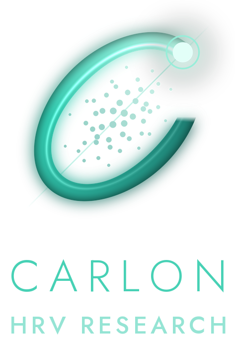
Record up to four Polar H10 or Movesense sensors at once, mark every phase with one tap, and leave with original RR data, values per phase, a methods paragraph and publication-ready figures.
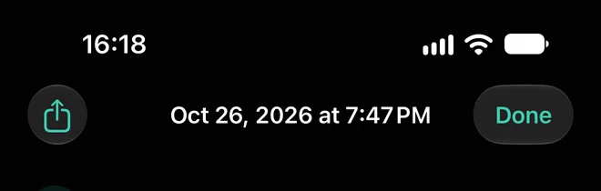
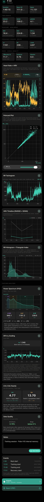
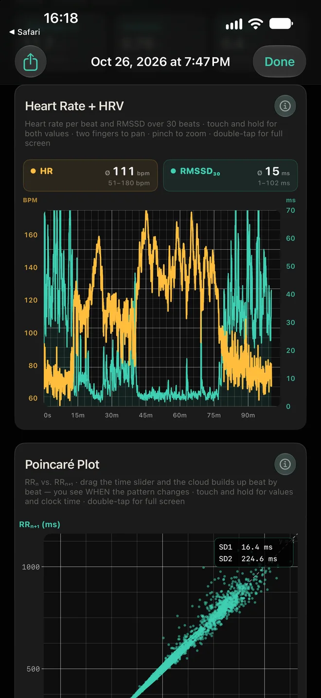
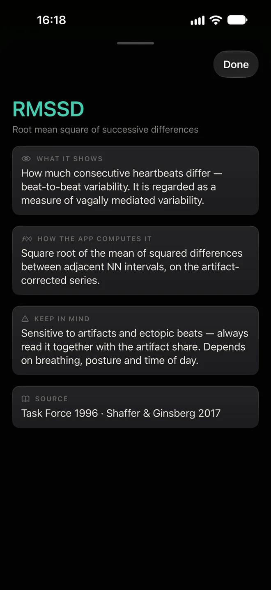
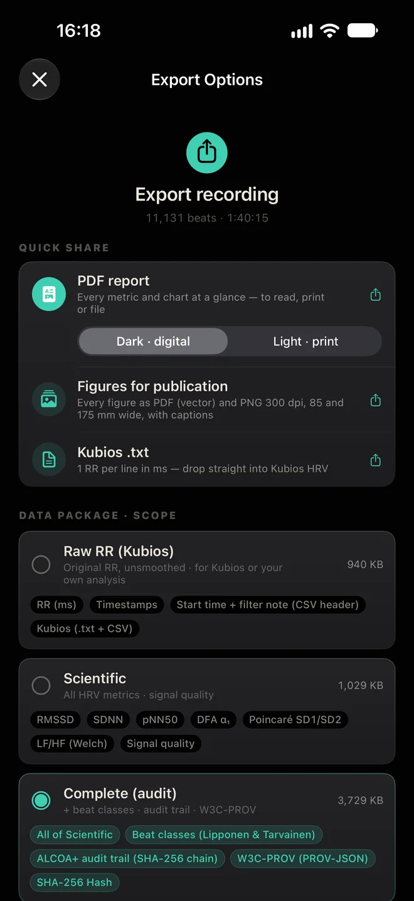

Both read the heart's electrical signal at the chest – the standard for reliable HRV, where optical wrist and ring sensors fall short in motion. The app is tested with both, and they can run side by side in one study.

Polar H10 validity against ECG: Gilgen-Ammann et al. 2019; Schaffarczyk et al. 2022.
The measurement takes an hour. The work around it often takes longer – this is what the app takes off your hands.
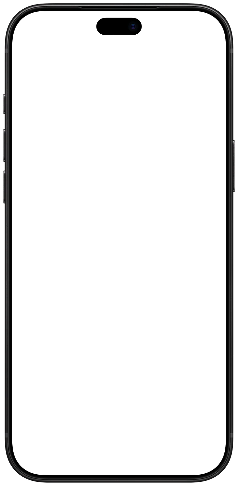
A 100-minute session – rest, training, recovery – from one Polar H10. The time slider rebuilds the Poincaré cloud beat by beat; touch and hold to read any beat with its clock time.
Unedited screen recording of CARLON HRV Research. Polar H10 internal memory, 11,131 beats; shared with consent, pseudonymized.
Up to four sensors record to their own memory. Tap Rest, Training, Recovery as the protocol moves on.
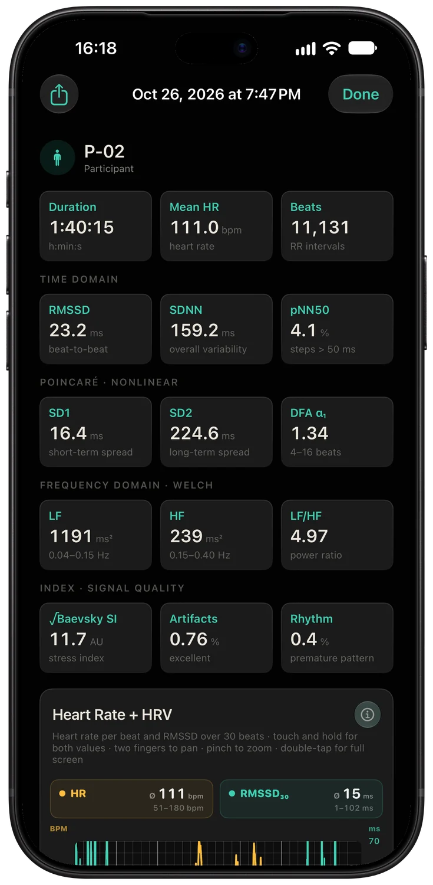
All sensors in one go. Each recording arrives with its participant, real start time and every metric.
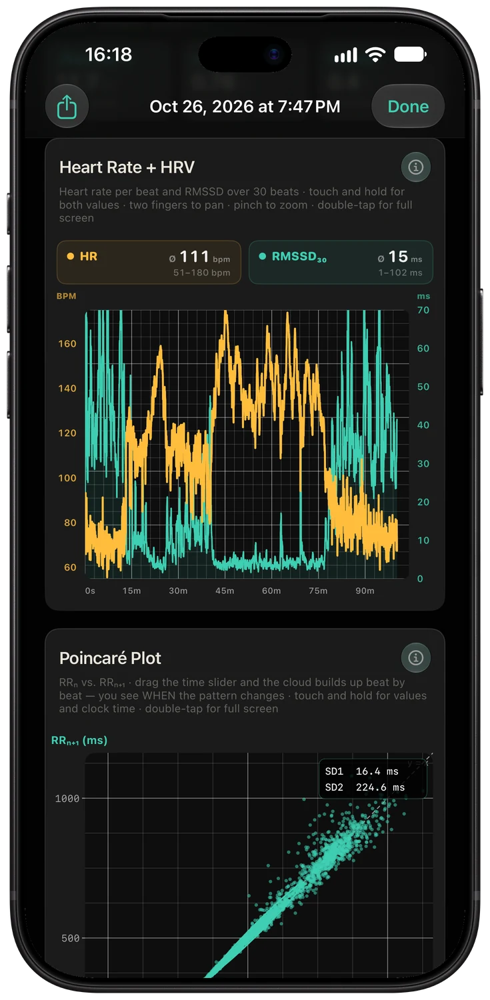
Heart rate and HRV together over the whole session – touch and hold for values.
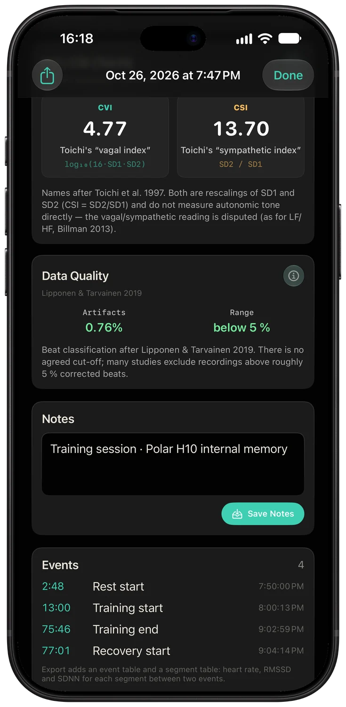
Every event with its clock time – and a segment table with values per phase in the export.

Every chart full screen, upright or sideways: Poincaré, tachogram, spectrum, DFA α1 over time – each with method and source.
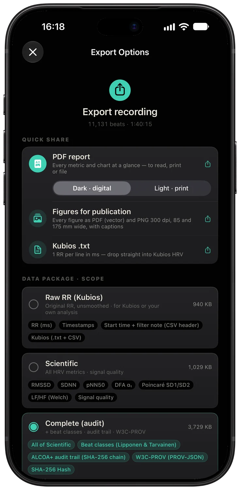
PDF report, figures for publication, Kubios, CSV, EDF+, WFDB, JSON – shared from the iPhone.
Screens from the app with real recordings. The app interface is in English.
Original data for your analysis – plus everything you would otherwise build by hand.
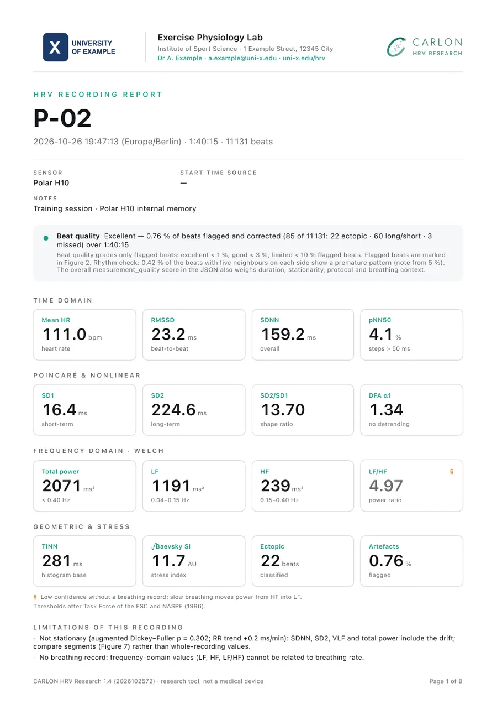
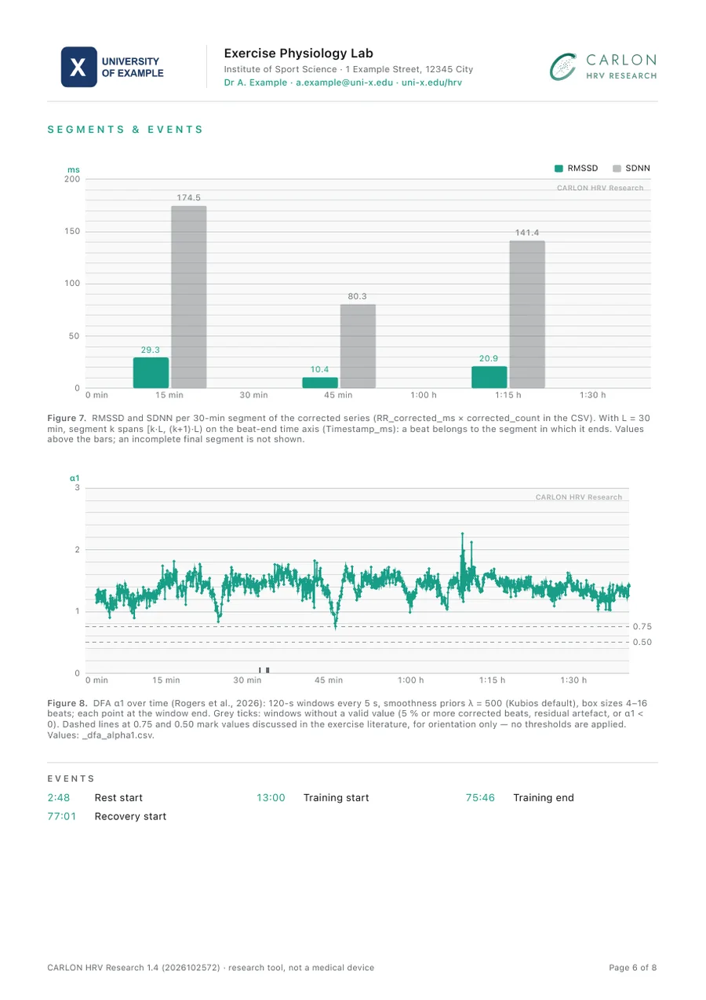
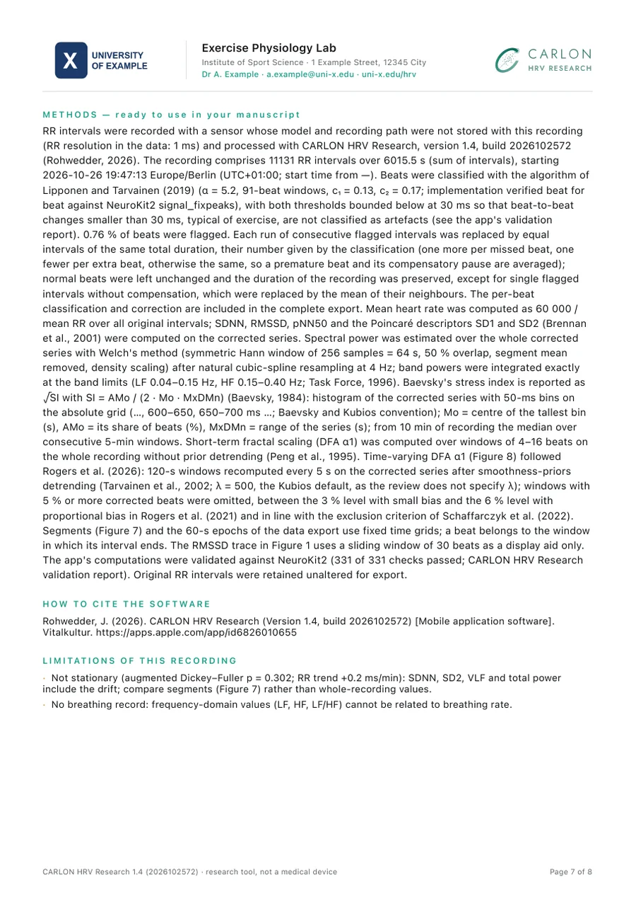
Each metric is recomputed by an independent reference with the same definition and parameters. The dossier names every check, every tolerance – and every error we found and fixed along the way.
checks passed against NeuroKit2, SciPy and Task Force definitions
series with artifact detection identical to NeuroKit2, beat by beat
beats in synthetic test vectors and real Polar H10 / Movesense recordings
Several athletes per session, phases marked live, DFA α1 over time for intensity research.
A methods paragraph to cite, figures in journal widths, and data your supervisor can recompute.
No account, no server, pseudonymous IDs and an append-only audit trail for every record.
A shared study folder for multi-site studies, and volume licenses through Apple School or Business Manager.
Polar H10 chest straps (live and internal memory) and Movesense Flash sensors (live and in-sensor recording). The app is tested with these two sensors.
Yes. Movesense Flash sensors stream heartbeats live and record in the sensor itself; the app also saves Movesense raw ECG and 9-axis motion data (accelerometer, gyroscope, magnetometer) as CSV. Movesense and Polar H10 can run side by side in one study.
Up to four from one iPhone. They record to their own memory and are read out together afterwards; each recording is assigned to its participant with its real start time.
Yes. The CSV carries the exact settings for the Kubios custom text import in its header; the app also writes a Kubios text file and FIT. RR intervals are exported exactly as recorded.
Tap an event button at each phase change. The segment table lists duration, beats, heart rate, RMSSD, SDNN and pNN50 for every phase between two events, computed with the same validated code as the rest of the app.
Every metric is compared with independent reference implementations (NeuroKit2, SciPy, Task Force definitions) on 18 RR series with 20,431 beats: 331 of 331 checks passed. Artifact detection matches NeuroKit2 beat by beat. The version-specific dossier lists every check and every error found and fixed.
No. There is no account and no server. Recordings stay on your iPhone and in its regular backup, and go only where you export them.
No – CARLON HRV Research runs on iPhone with iOS 17 or later. The exported files open on any platform.
No. It is a research and wellness tool and does not diagnose or treat any condition.
A one-time purchase on the App Store – no subscription, no per-participant fees. Institutions can buy licenses in volume through Apple School Manager or Apple Business Manager.
Everything above, for every study you run. No subscription, no per-participant fees, no account.
For research and wellness use. Not a medical device. Polar H10, Movesense and Kubios are trademarks of their respective owners; CARLON HRV Research is an independent app and not affiliated with them.